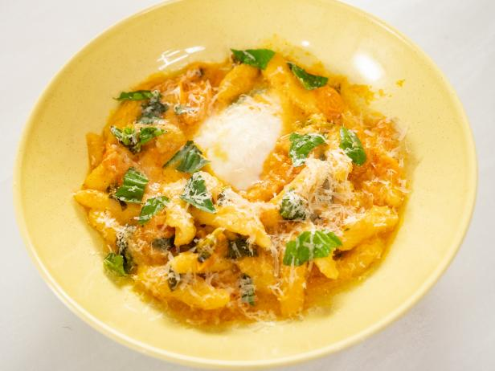

Cherry Tomato Pasta

Description
I came across this recipe the other day. My sweet neighbor, usually out in the afternoon tending to her overgrown garden, will extend a handful of golden cherry tomatoes whenever I walk past. I usually have to decline, as I'm on the way to the gym or store, where it isn't socially acceptable to walk in with a handful of loose cherry tomatoes. Sometimes, she will wait patiently for me to return and demand I take the sweet little morsels. Who am I to decline?
After letting a batch begin to rot in the decorative bowl on my dinner table, I vowed to actually try making something edible with these tomatoes. I'm not a big fan of snacking on cherry tomatoes raw, but they add a great level of sweetness and acidity to a dish, tinged with a slightly complex funk. I adapted J. Kenji Lopez-Alt's "Simple 5 Ingredient Cherry Tomato Pasta" recipe to my own situation, kitchen, and pantry. The result? Pretty damn good pasta.
Ingredients
- 1lb cherry tomatoes
- 2 or 3 fresh basil leaves
- 4 cloves garlic
- 1 box dry pasta
- 1/2 cup olive oil
- salt and pepper to taste
- (Optional) 1/2 cup of parmesan or pecorino cheese
Steps
- On one burner, bring a medium-sized pot filled halfway with water to a boil. Continue to step 3 while pasta cooks.
- Cook the pasta as directed on the box, straining it one minute before the "al dente" time on the box. Be sure to collect some of the pasta water for later.
- Heat almost the entire 1/2 cup of olive oil in a 12" pan over medium heat, until shimmering.
- Thinly slice 4 cloves of garlic, adding to the pan once heated.
- Let the garlic cook for a few minutes - move to the next step once the garlic begins to soften, not brown.
- Add the cherry tomatoes to the pan, stirring occasionally for 10 minutes (until the tomatoes begin to blister). You can help them along by pressing with the back of a wooden spoon.
- Let the sauce simmer and thicken for another 5 minutes.
- Mince the basil leafs and add to the sauce, alongside the rest of the olive oil, some ground black pepper, and a heavy pinch of salt.
- Once the sauce is thick enough to leave a trail when run through with a spoon, pour the pasta into the skillet, slowly splashing a bit of the pasta water in as you mix.
- Grate in a 1/4 cup of the parmesan/pecorino cheese. Stir frequently and cook another minute or two, until pasta is thoroughly coated and mixed.
- Serve in a bowl
- (Optional) Grate a little extra cheese over the top
Return to home